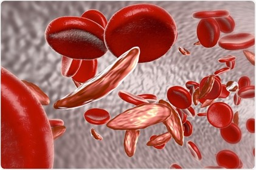
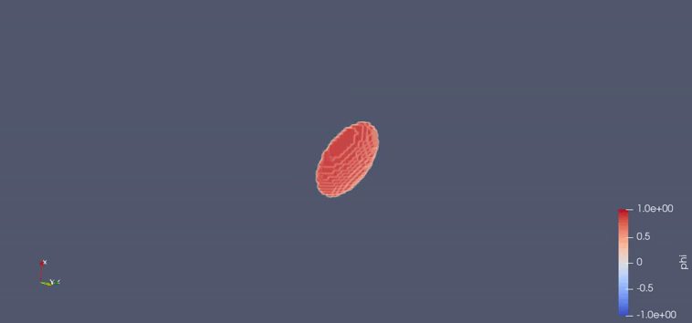

RBC shape analysis
The study of the rheological properties allows us to determine if cells are carrying out their functions properly. The dynamics of red blood cells, specifically the deformation and transport properties, are greatly influenced by the cell membrane. Some blood-related diseases, such as malaria or sickle cell anaemia, act in developing membrane alterations, where rigidity and shape play a very important role.

Mixed of healthy cells and cells affected by sickle cell anaemia
In this project, a three-dimensional (3D) phase-field model coupled with incompressible Navier-Stokes fluid is implemented in order to study the deformation of a red blood cell under different flow conditions.

Red blood cell shape evolution under specific Poiseuille flow conditions
The full code is implemented in Python. It is based on the resolution of two Poisson equations to solve the velocity of the fluid and an Euler equation to obtain the evolution of the cell shape.
Through this method, a parachute shape can be displayed for high velocities, and a slipper shape is obtained for low velocities as it happens in these papers: Tomaiuolo-2011, Misbah-2012.
Different simulations of Red Blood Cells inside a Poiseuille flow with a cylindrical geometry. At left a slipper shape is displayed.
At right a parachute shape is obtained. To show these giffs, the camera is fixed on the centre of the Red Blood cells. The differen-
ce on the outcome lies in the difference of the velocity of the fluid; higher the velocity, more parachutting will be observed.
You can explore the code in this github repository: RBC shape analysis